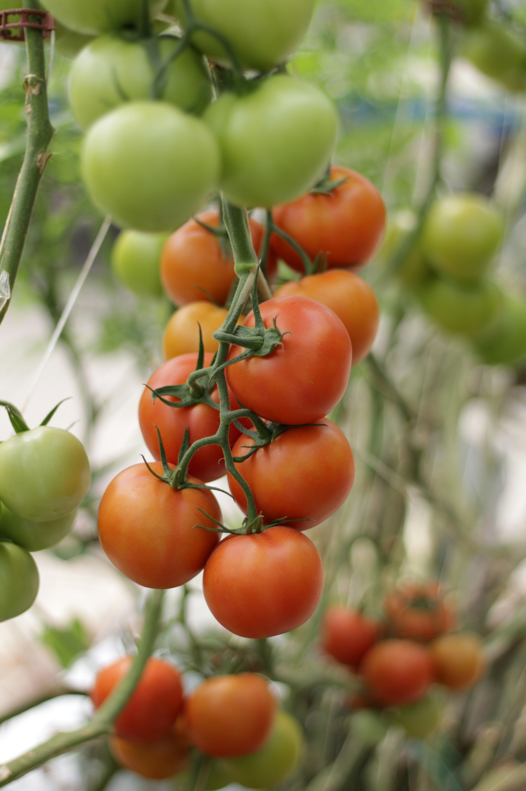

Smart Gatenga Garden

|  |
Project OverviewSmart Gatenga Garden is a community-driven initiative that transforms underutilized land into productive, eco-friendly gardens. It empowers youth, strengthens food security, and promotes sustainable agricultural practices in local villages. Smart Gatenga Garden is a grassroots initiative dedicated to transforming local communities through sustainable agriculture. By turning idle land into vibrant gardens, the project addresses food insecurity while promoting environmental stewardship and unity among residents. This project not only feeds families but also cultivates a sense of ownership and pride in the umudugudu. Our approach is centered on organic farming techniques that respect local ecosystems and preserve soil health. Through training programs and hands-on learning, we equip youth with valuable agricultural skills, increasing their chances for employment and entrepreneurship. The gardens serve as both a food source and a learning hub, merging tradition with innovation. With active participation from residents, especially the youth, the Smart Umudugudu Garden creates a platform for collaboration, empowerment, and resilience. It is more than just growing crops — it is about growing a stronger, more self-reliant community where everyone plays a role in shaping a sustainable and secure future. |